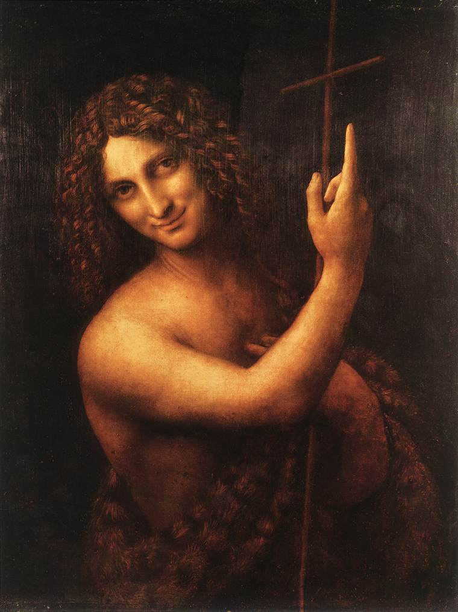

Mona Lisa
Delicate modelling, a poised expression, and a distant landscape give this portrait its lasting pull.
An eye for everything
A Renaissance artist and investigator whose paintings unite close observation, carefully balanced composition, and an enduring sense of mystery.

Biography
Leonardo da Vinci trained in Florence in the workshop of Andrea del Verrocchio, at a time when artists, engineers, architects, and natural philosophers often worked across disciplines. He carried that breadth of attention throughout a career spent between Florence, Milan, Rome, and France.
His notebooks record studies of the human body, plants, water, machines, and light. These investigations informed his paintings, where faces turn gently through shadow, gestures hold psychological weight, and landscapes seem to breathe with moisture and distance.
Only a small number of paintings are securely attributed to Leonardo, which makes their influence all the more remarkable. The Mona Lisa and The Last Supper remain touchstones for portraiture, narrative, and the art of suggesting an inner life.
Leonardo’s hallmark is sfumato: soft, smoky transitions that blur hard edges and make forms emerge gradually from shadow. He joined precise observation to calm geometry, creating pictures that feel at once measured, natural, and quietly enigmatic.
Four works to know
Delicate modelling, a poised expression, and a distant landscape give this portrait its lasting pull.

Leonardo stages a moment of shock and response, organising every gesture around the central figure.

Turning pose, luminous skin, and the alert animal make this portrait feel unusually alive.

A figure emerges from darkness with a subtle smile and a gesture that directs the eye upward.
Keep exploring
Art begins with attention—and then asks what else attention can reveal.